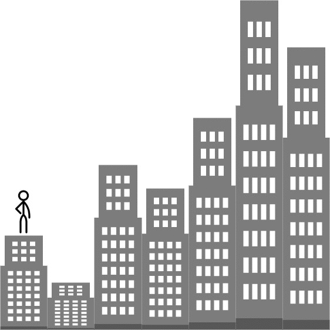

1642. 可以到达的最远建筑
贪心 + 小顶堆：每段爬升先记进堆「默认用梯子」；梯子超了就把堆里最小的爬升改用砖，砖也花光就停在当前位置。
思路
- 下坡/平地不用资源；每段上坡
d先入小顶堆，表示「暂由梯子扛」。 - 堆里超过
ladders个就把最小的一段弹出改用砖——梯子省给最大的爬升才最优。 - 累计砖
used超bricks立即返回i-1；用long防累加溢出。
图解
最优解
1import java.util.*;2 3class Solution {4 public int furthestBuilding(int[] heights, int bricks, int ladders) {5 // 小顶堆里放「目前让梯子扛着」的各段爬升；堆里至多 ladders 个6 PriorityQueue<Integer> heap = new PriorityQueue<>();7 long used = 0; // 已花的砖（累加值可能超 int，用 long）8 for (int i = 1; i < heights.length; i++) {9 int d = heights[i] - heights[i - 1];10 if (d <= 0) continue; // 下坡或平地：不用任何资源11 heap.add(d); // 每段爬升先默认让梯子扛12 if (heap.size() > ladders) {13 used += heap.poll(); // 梯子不够了：把最小的一段改用砖14 }15 if (used > bricks) return i - 1; // 连砖也不够：最远只能到 i-116 }17 return heights.length - 1;18 }19}题目
给你一个整数数组 heights ，表示建筑物的高度。另有一些砖块 bricks 和梯子 ladders 。
你从建筑物 0 开始旅程，不断向后面的建筑物移动，期间可能会用到砖块或梯子。
当从建筑物 i 移动到建筑物 i+1（下标 从 0 开始 ）时：
- 如果当前建筑物的高度 大于或等于 下一建筑物的高度，则不需要梯子或砖块
- 如果当前建筑的高度 小于 下一个建筑的高度，您可以使用 一架梯子 或
(h[i+1] - h[i])个砖块
示例 1：

输入：heights = [4,2,7,6,9,14,12], bricks = 5, ladders = 1 输出：4 解释：从建筑物 0 出发，你可以按此方案完成旅程： - 不使用砖块或梯子到达建筑物 1 ，因为 4 >= 2 - 使用 5 个砖块到达建筑物 2 。你必须使用砖块或梯子，因为 2 < 7 - 不使用砖块或梯子到达建筑物 3 ，因为 7 >= 6 - 使用唯一的梯子到达建筑物 4 。你必须使用砖块或梯子，因为 6 < 9 无法越过建筑物 4 ，因为没有更多砖块或梯子。
示例 2：
输入：heights = [4,12,2,7,3,18,20,3,19], bricks = 10, ladders = 2 输出：7
示例 3：
输入：heights = [14,3,19,3], bricks = 17, ladders = 0 输出：3
提示：
1 <= heights.length <= 1051 <= heights[i] <= 1060 <= bricks <= 1090 <= ladders <= heights.length
题面取自力扣当前版本。
数据快照 2026-11-04。题面版权归力扣所有，本站点仅供本人学习使用，请勿对外发布。